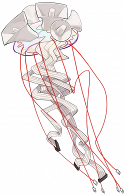

怪物官方原文 ↗智械中枢原本的触须被光缆和电线取代，而头部实际上是一个巨大的处理器。编号1058地图星趴·梦想号 <!--尺寸250数值（攻击 / 防御 / 生命）难度攻击防御生命星币疯狂111615极限111815技能主动技能｜无机演算（冷却 2）：指定距离最近的一个受伤的普通怪物，如果是非智械怪物将其转化为智械海盗鲨，如果是智械怪物恢复其生命值至生命值上限。被动技能｜位面体：经过时不会触发战斗。机制1.经过时不会触发战斗。 2.无法反击。机制标签不攻击,飞行,使用技能相关内容星趴·梦想号地图星趴怪物图鉴图鉴Z3000角色